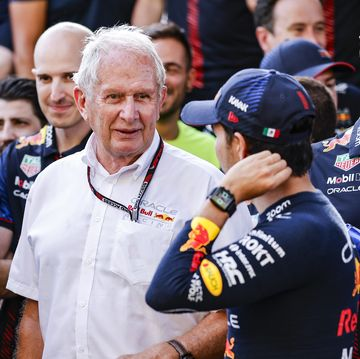

Sergio Pérez confirma que Helmut Marko le pidió perdón por sus comentarios

El mexicano aprecia el esfuerzo de Helmut Marko por querer disculparse personalmente con él y afirma
que no se sintió ofendido sabiendo de qué forma lo dijo.
Después del Gran Premio de Italia, uno de los temas a hablar en las dos semanas hasta llegar a
Singapur han sido las malas palabras que Helmut Marko, asesor del equipo Red Bull, había tenido en
Servus TV contra uno de sus pilotos, Sergio Pérez.
El austriaco, hablando de la inconsistencia que había estado teniendo este año Checo, llegó a decir:
"Es sudamericano y por eso su cabeza no está tan enfocada como la de Max". Esto, por supuesto, ha
despertado toda clase de opiniones.
Tal fue así que hasta el propio Marko tuvo que salir a emitir unas disculpas, también en Servus TV,
asegurando que su intención no era vincular sus momentos de inconsistencia este año con su lugar de
nacimiento. Tras esto, Helmut había confirmado que no hablaría este fin de semana sobre este tema,
centrándose únicamente en cuestiones deportivas.
Sergio Pérez quita hierro al problema con Helmut Marko
En la llegada a Singapur, estas palabras han sido tema de hablar, con algún piloto como Lewis
Hamilton pronunciándose al respecto. El británico se refirió a ello como algo "inaceptable".
Ante esto, Sergio Pérez ha respondido al ser preguntado que Helmut Marko ya se disculpó con él por
sus comentarios, asegurando que tampoco fue algo que le importó sabiendo como es en persona Helmut
Marko.
"Tuve una muy buena conversación con él y me pidió perdón por sus comentarios. Eso es lo más
importante de todo, seguimos adelante. No me he sentido ofendido en absoluto. Conociendo a Helmut,
sé que lo dice de esa forma, es una persona que me ayuda mucho", afirmó Checo en las ruedas de
prensa de la FIA previas al Gran Premio en Singapur.
"Todos cometemos errores y lo más importante para mí ha sido su disculpa personal, la acepto. Lo que
ha pasado después en los medios, está fuera de mi control. Si esos comentarios se hubiesen hecho con
otra perspectiva, los habría encajado de forma diferente", concluyó el piloto de Red Bull.